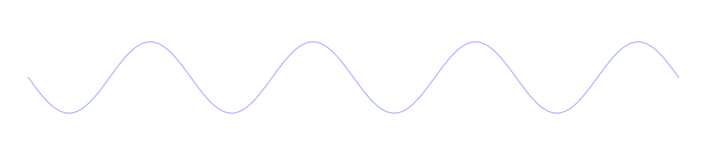

Один мотив. Разное звучание.
Сначала мелодия звучит одна. Бас и ритм постепенно превращают её в плотный танцевальный трек.

02:00 / четыре части / мышь или клавиатура
Звук и запись исполнения начнутся после нажатия.
СПЛЕТЕНИЕ / 1 ИЗ 4
Одна мелодия стала полноценным треком.
Сохраняется именно это исполнение со всеми твоими жестами.
Музыка и таймер остановлены.Продолжи с того же места.
02:00 / 112 BPM / ре минор / 56 тактов
Один и тот же мотив меняет характер благодаря басу, ритму и тембру.
Ре4 / четверть · пауза / восьмая · Фа4 / восьмая · Ля4 / четверть · Ми4 / четверть
Вручную вводит партии, меняет их баланс и открывает фильтр. Мотив и партии сочинены заранее. Следующая часть вступает на отметке партитуры. Если отметка уже прошла — на ближайшем такте.
A S D F: ноты. Цифры 1–4: части по порядку. Пробел: пауза. Ползунки доступны мышью, касанием, клавишей Tab и стрелками.
Мелодия: синус с треугольным слоем → фильтр → эхо и реверберация.Бас: низкий треугольный тон → фильтр → огибающая.Ударные: синус и шум → фильтры → компрессор.
«Начать исполнение» оставляет переходы тебе. «Слушать композицию» исполняет подготовленный пример автоматически.